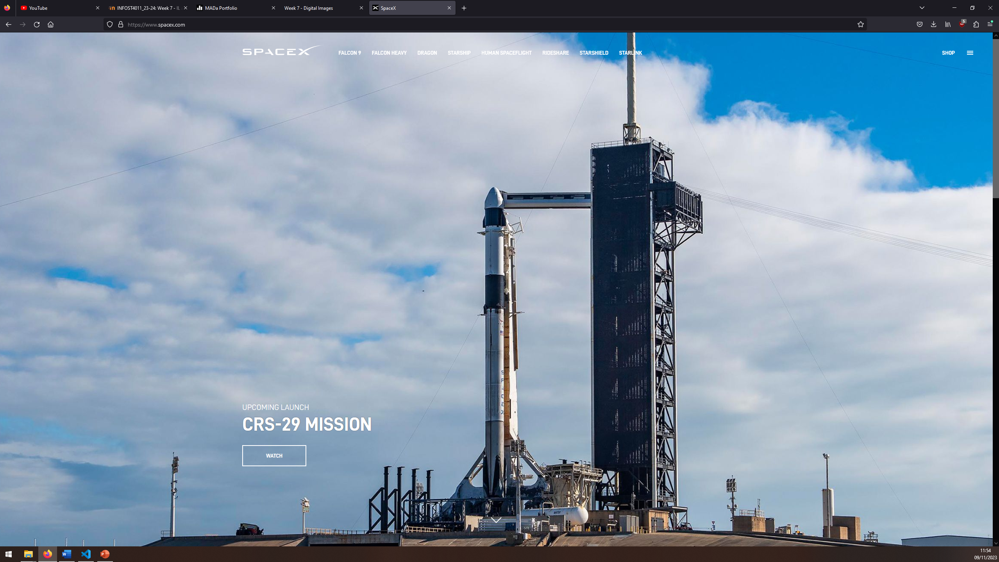
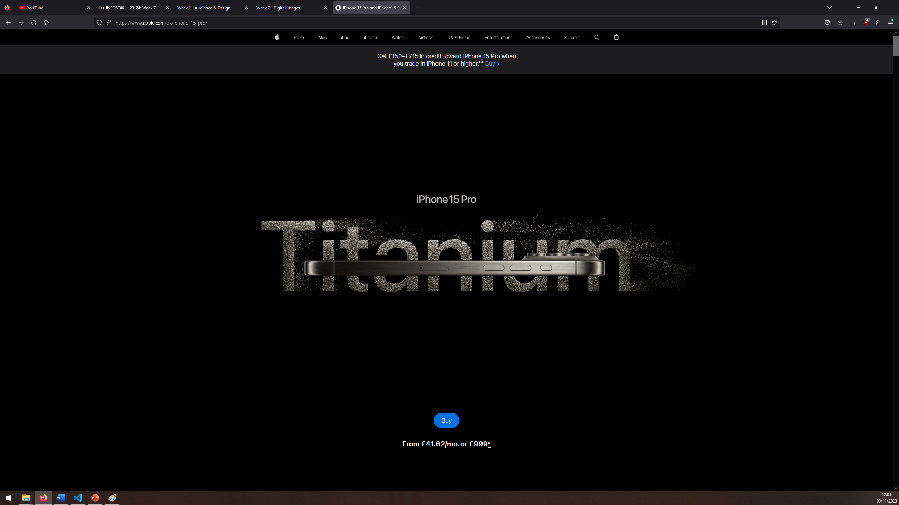
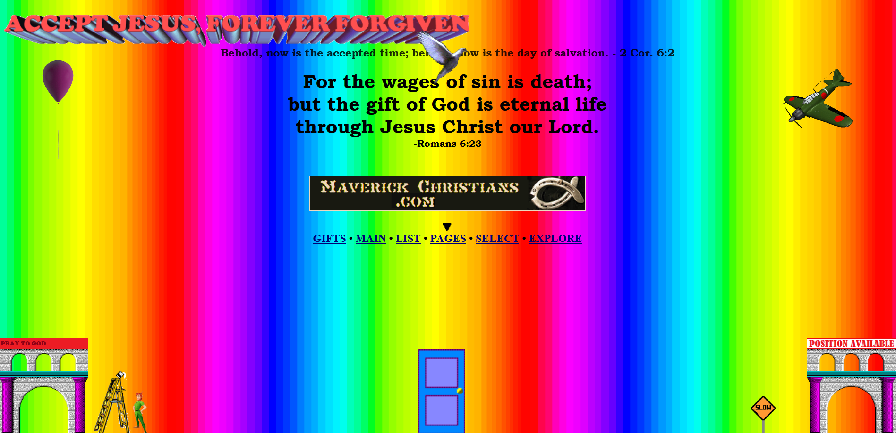
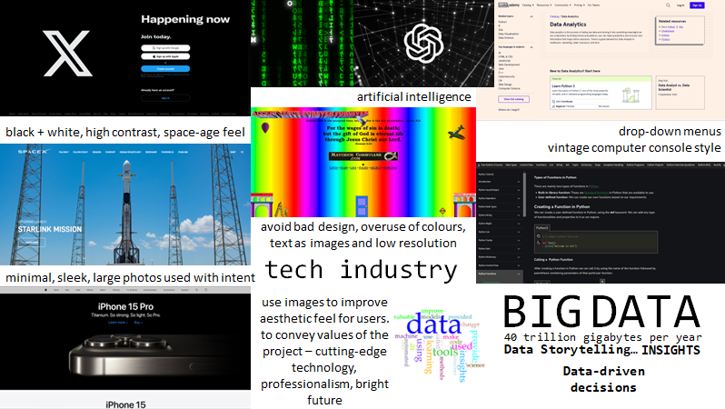
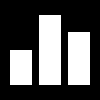

Week 7 - Analysing & Editing Digital Images
IL Task 1 - The stages of the creative process
Here are the 5 stages of the creative process and how I feel I have engaged with them so far:
- Preparation:
- Incubation:
- Ideation:
- Evaluation:
- Implementation:
Creative ideas can often come from processing other people's content. In my project so far, I have gathered many ideas from multiple sources. My first main inspiration came from watching YouTube videos on data analysis, which helped me decide on my topic and how I could contribute to this topic in a unique way. My preperation then invovled reading internet articles. After this, the rest of my inspiration came from following the weekly lab tasks set by the multimedia course. I found these very helpful as they involved learning various design concepts and then putting them into practise through analysing other creators' works and then generating our own.
I've worked over my resources for 7 weeks now to develop my ideas. This involved going back and forth over the videos, articles, images and moodboard. I would also take breaks and work on my other subjects, then when I had an idea I would come back and update my website.
I talked about some ideation above, but most of my 'Aha!' moments also involved discussions in the university labs. I usually found that talking over ideas helped more than just thinking about them alone.
This required a lot of self-reflection. With most of my ideas, if I wasn't very confident with it, I would quickly implement it or make a prototype. I could then evaluate more accurately if it was a good decision or not. In some cases, as mentioned above, I asked my peers and teachers in class or labs for further input.
Once I had resolved most of the challenges with my idea, I could implement it easily as it was already planned out in advance. This involved the coding in visual basic and then uploading it to the github webserver via git.
IL Task 2 - Analyse the use of images on the web
Here I will analyse the use of images on SpaceX and Apple:
This website is an example of an image used well in an aesthetic way. The website is the homepage for SpaceX who launch rockets into space. This image obviously encapsulates the key message of the company by displaying a rocket ready to be launched. As well as aesthetics, it combines advertising and possibly propoganda. SpaceX have had many failed launches but they obviously do not chose to demonstrate one of their rockets exploding on their homepage. They want to portray themselves as a flourishing company. Clearly the image is used with intent to acheive these goals. I beleive it also enhances retention. It is a bold, colourful, high resolution raster image, which forces the viewer to enagage as it fills the whole screen. They also use a vector image as their favicon, a small white X logo on a black background. This enhances brand recognition.
Apple's web page for their flagship phone, the iPhone 15 Pro, is another example of an image used well, in combination with text. Similar to the above example, it has a vector favicon of the signature Apple logo, black on a white circular background. Enhancing brand awareness. Next, there is a dominating black background with a high resolution raster photo of their product. This blends seamlessly into the word 'Titanium' in the background, which is actually itself made up of a raster image of what looks like titanium dust. As with SpaceX, this image is used with intent to force the viewers' attention to it. It is minimilistic and world-class, demonstating brand values. It is clear Apple wants users to leave with the material of titanium and their space-age phone retained in mind.
We discussed this example in week2 in relation to design, but I will look specifically at the bad image design now. Firstly, the heading of the web page is a clip art image with a 3D effect. This is not good for comprehension as it is hard to read. A user is also unable to highlight the text, which means it is not good for accesability. Screen readers of translators will not be able to pick up on the heading. There are also animations (rastor gif files) that overlap other images and text, making readability worse. They are also low resolution and pixelated, giving the website an unprofessional feeling. There is no clear message being portrayed by the web page, which leaves vistors confused.
I then incorporated by findings into my moodboard which you can see below or download here.
IL Task 3 - Generate a portfolio of images
I have already started assembling a collection of images in my img folder. These are mostly related to the portfolio topics and not the final topic of the project (AI and Data Analysis). They have been saved in approximately 1080p resolution as this is the highest many screens use. Any higher resolution would compromise the speed of the website. However, I will download some high resolution images as masters and I can use media queries to use smaller versions depending on the screen size. The majority of my images were downloaded from Pexels or Unsplash. I also designed my own vector favicon using photoshop. You can find this at the homepage and is saved at img/myicon.png. I also used a vector image for the menu icons for the mobile version of my site. These are in the homepage on mobiles and saved in the img folder as Cross_icon_white.svg and Hamburger_icon_white.svg. See below for these icons and 6 high-resolution images that I plan to use for my final website on AI and Data Analysis. I used the code at W3Schools to make a slideshow.



Lab Task 1 - Optimise your images for Web use
For this task I used Adobe Photoshop 2023 as that is the program I use personally. I changed the bit depth to greyscale, scaled it too 800px wide and cropped the image.
Lab Task 2 - File naming, file format settings and exporting your image
I then named and exported my file appropriately (img001-mada-man-desk-macbook-800px-72ppi-greyscale-0-1.jpg). Compare the new image below to the first image in my slideshow above. It is far smaller in file size and will therefore load faster. Only 124kb compared to the master image's 2.18mb!
Lab Task 3 - Exploring alternative options
Reflecting on image optimisation purely by performance, clearly the second edit image (indexed, 139px, 50ppi) performs best as it is the smallest file size at only 9.47kb. However, the image quality is 5 on the table, meaning it is very poor quality. I do not think the technique of indexing is a good process for optimising images. As you can see in the third edit, this is a high resolution image that was indexed. It it still 1.19mb but only 3 on the scale, meaning passable quality. The first edit image is far superior, I would rate it is 2, fine quality, yet it is only 124kb. This is excellent for optimisation considering the jump in quality from 2 to 1 on the scale is not very noticable, yet the master image is a huge 2.18mb. Considering this, I believe the best way to start optimising images is to scale to 800-1980px width, at 72ppi. Next steps would be cropping and, if suitable, greyscale. Obviously this applies to raster jpegs. Pngs of illustrations could be made smaller as they are more scalable. Vectors can be tiny resolutions as these are even more scalable.